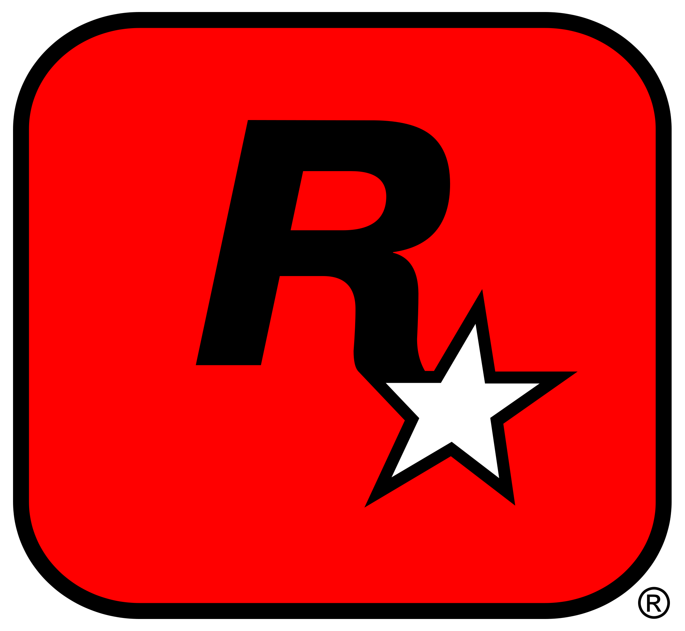
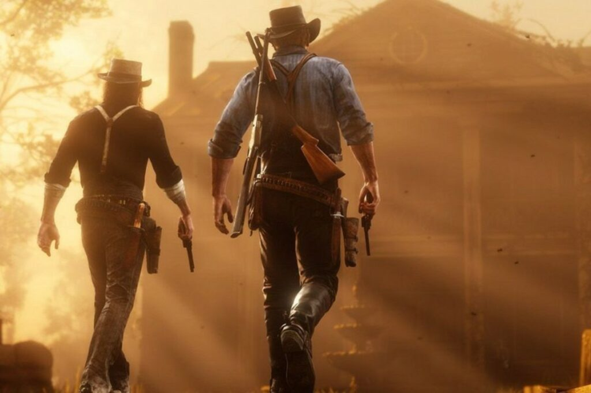
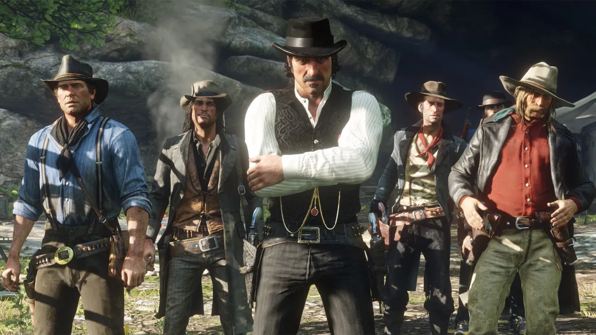
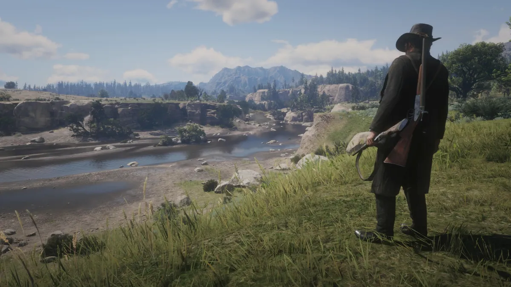
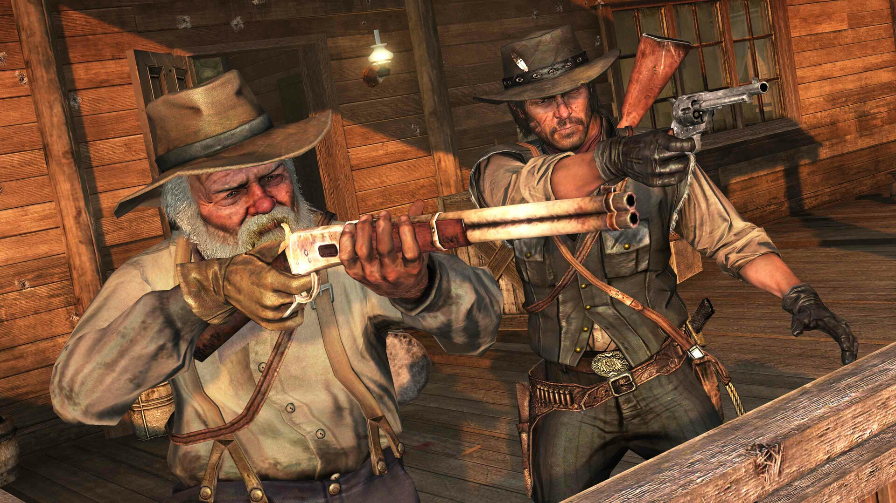
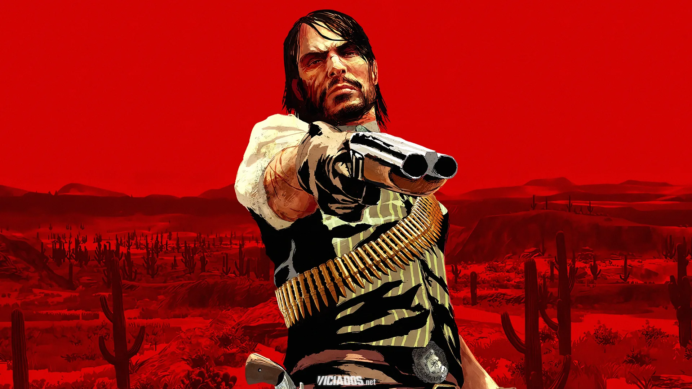
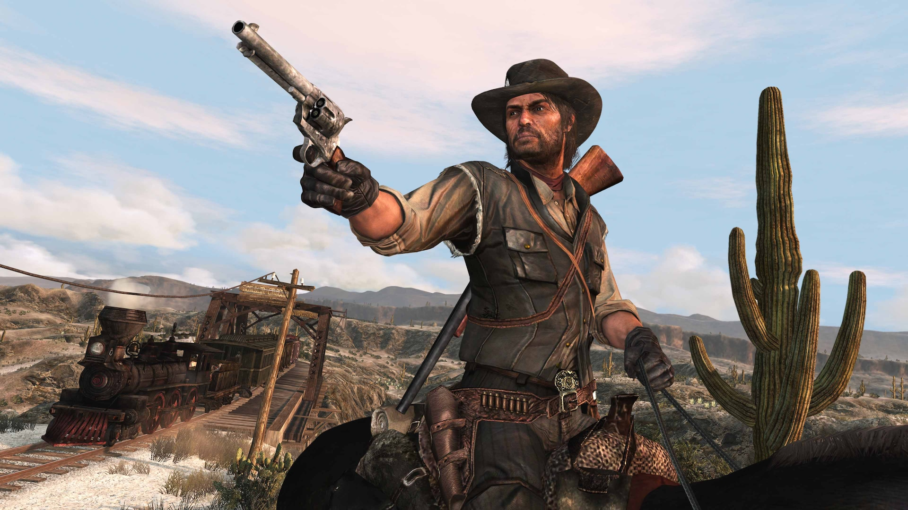
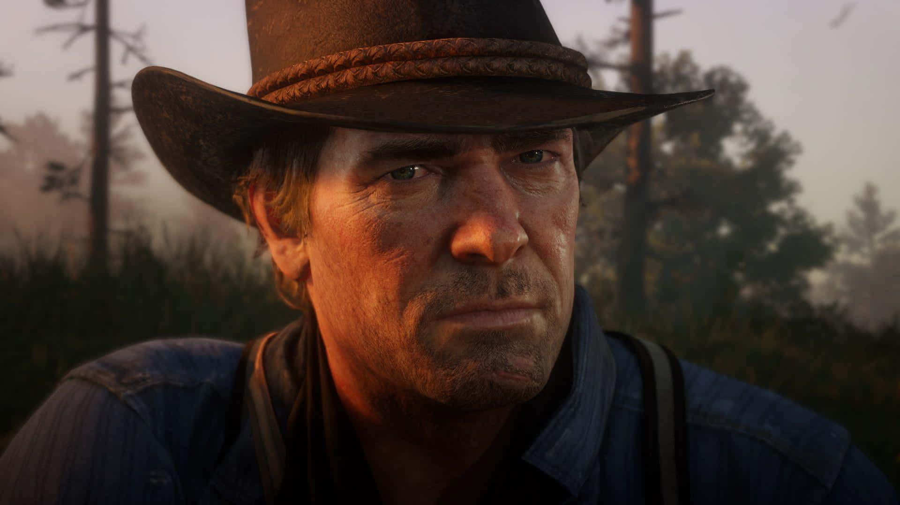
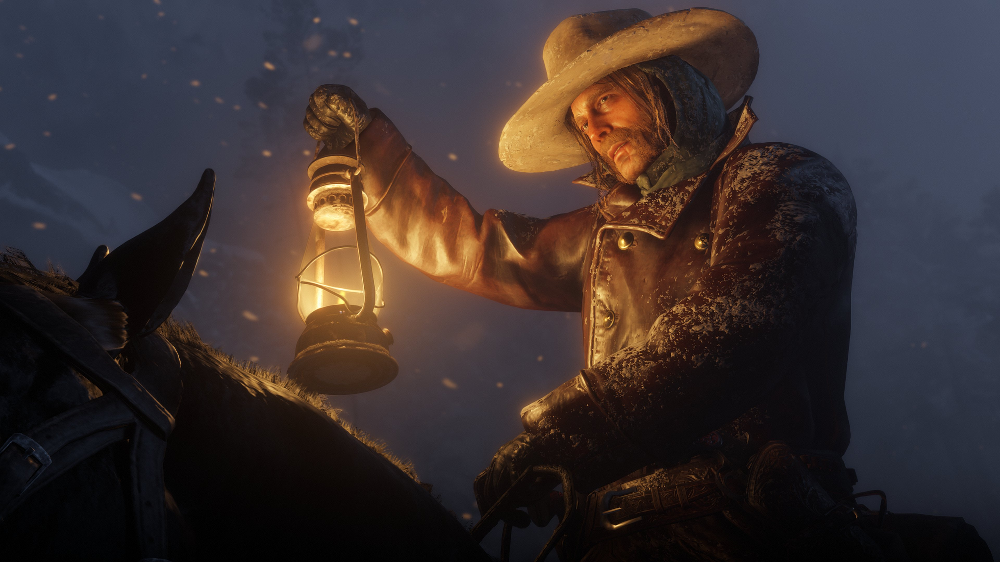
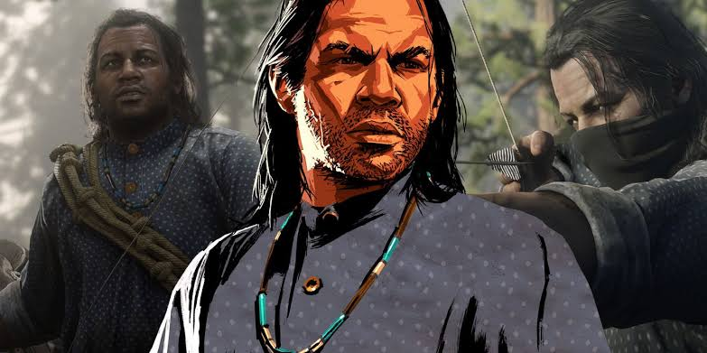

Red Dead Redemption 2 se passa em 1899 e conta a história de Arthur Morgan, um dos membros mais importantes da gangue de Van der Linde, liderada por Dutch van der Linde. Após um assalto fracassado na cidade de Blackwater, a gangue é forçada a fugir das autoridades e de caçadores de recompensas, iniciando uma jornada pelo oeste americano.
Durante a fuga, Arthur participa de diversos assaltos, conflitos e aventuras ao lado de seus companheiros, enquanto presencia o declínio gradual da gangue. Dutch começa a tomar decisões cada vez mais impulsivas e perigosas, colocando todos em risco. Ao mesmo tempo, Arthur enfrenta problemas pessoais e passa a refletir sobre suas escolhas de vida, sua lealdade à gangue e o tipo de homem que deseja ser.
Conforme a história avança, a situação da gangue piora, levando a traições, perdas e confrontos. Arthur acaba se tornando uma figura central na tentativa de proteger aqueles que ainda considera família. Sua jornada é marcada por redenção, sacrifício e pela busca de um propósito em um mundo que está mudando rapidamente e deixando para trás a era dos fora da lei.
Algo que marca MUITO neste jogo, é a trilha sonora impactante, que contribui para tornar a história deste jogo tão magnifica e impressionante. Abaixo, há umas das trilhas sonoras, clique para sentir a energia do game! (Parte principal: 3:00)



Red Dead Redemption acontece em 1911, anos após os eventos de Red Dead Redemption 2. O protagonista é John Marston, ex-integrante da gangue de Van der Linde que tentou abandonar a vida criminosa para viver em paz com sua esposa Abigail e seu filho Jack.
Entretanto, agentes do governo sequestram sua família e obrigam John a caçar seus antigos companheiros de gangue em troca da liberdade deles. Durante sua jornada, ele percorre diversas regiões do oeste americano e do México em busca dos últimos membros sobreviventes da antiga gangue.
Ao longo da história, John enfrenta criminosos, políticos corruptos, revolucionários e militares, enquanto tenta cumprir sua missão e recuperar sua família. Depois de eliminar seus antigos parceiros e acreditar que finalmente poderá viver em paz, John retorna para seu rancho e reencontra sua família.
Porém, o governo o trai. Em um dos momentos mais marcantes da história dos videogames, John enfrenta sozinho um grande grupo de agentes federais para dar tempo de sua família escapar. Ele é morto em uma última tentativa de proteger aqueles que ama. Anos depois, seu filho Jack Marston busca vingança contra o responsável pela morte de seu pai, encerrando a história da família Marston e simbolizando o fim definitivo do Velho Oeste.



Conheça os principais personagens do universo RDR, contendo tanto personagens do primeiro game, quanto do segundo. Abaixo, há cards com os nomes dos mesmos, e uma explicação referente ao que se passa com eles dentro dos jogos.

Arthur Morgan é um experiente fora da lei e um membro leal da gangue Van der Linde. Sua jornada aborda temas de honra, redenção e escolhas difíceis em um mundo em constante mudança.

John Marston é um ex-fora da lei que tenta deixar seu passado criminoso para trás. Ele luta para proteger sua família enquanto enfrenta as consequências de sua vida anterior.

Dutch van der Linde é o carismático líder da gangue e uma figura paterna para muitos membros. Seus ideais entram em conflito com a realidade à medida que seus planos começam a fracassar.

Sadie Adler se transforma de uma viúva em luto em uma das pistoleiras mais destemidas do Velho Oeste. Sua coragem e determinação a tornam uma importante aliada.

Micah Bell é um fora da lei impiedoso e imprevisível que causa conflitos dentro da gangue. Sua ambição e egoísmo acabam gerando consequências graves para todos.

Charles Smith é um habilidoso caçador e rastreador conhecido por sua sabedoria e lealdade. Ele frequentemente atua como uma voz de equilíbrio nos momentos mais difíceis.